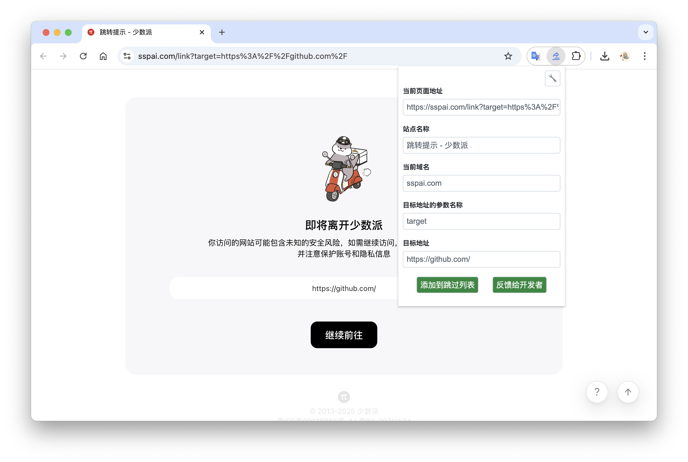

自动跳过，无感发生。
识别已支持站点的外链中转地址，自动前往目标页面。少一次「继续访问」，多一点专注。
安装即用知乎、掘金、CSDN 的外链中转页？
让 Redirect-Skipper 帮你跳过，
把注意力留给真正想看的内容。
从你熟悉的网站，
顺畅出发。
一个小扩展，让阅读、查资料和发现灵感
连贯起来。安装一次，剩下的交给它。
内置规则覆盖内容社区、开发者平台与文档工具。
站点库持续更新，也欢迎你的补充。
没有找到匹配的站点。你可以添加自定义规则，或向项目反馈。
对于把目标地址放在查询参数里的中转页，
你可以直接在扩展面板中添加规则。
停留在中转页，点击浏览器工具栏中的扩展图标。
检查当前页面地址，选择 target、url、href 等参数。
点击「添加到跳过列表」，刷新页面即可应用。

已支持的站点安装后即可使用。将扩展固定到工具栏，方便随时添加自己的站点规则。浏览器可能会要求你确认扩展权限。
该站点可能尚未收录，或网站改变了链接格式。你可以添加自定义规则，或在 GitHub 提交问题并附上中转链接。少数需要解析页面的站点还需要相应访问权限。
扩展使用标签页权限识别中转地址，使用存储权限保存规则。部分站点需要请求页面来提取链接，并从 GitHub 获取站点规则更新。开发者在 Chrome 商店声明不收集或使用用户数据；具体实现可在开源仓库查看。
扩展按照站点规则提取目标链接，并不保证适用于每个网站，也不会判断目标网站是否可信。请自行确认目标地址。模糊匹配是可选项，默认关闭。
可以。Edge 使用 Chrome 商店中的扩展版本；如果浏览器提示，请先允许安装来自其他商店的扩展。Firefox 使用单独的附加组件商店入口。
选择你的浏览器，从下一次点击开始。
免费使用 · MIT 开源 · Chrome / Edge / Firefox